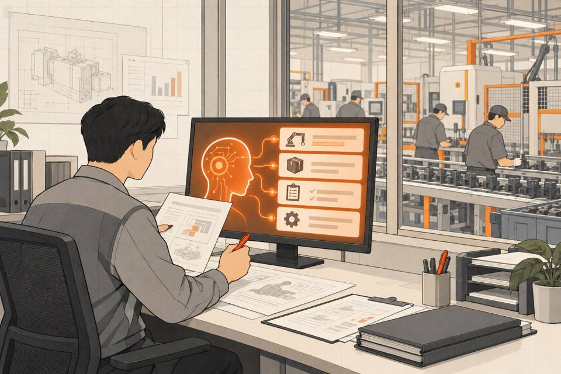
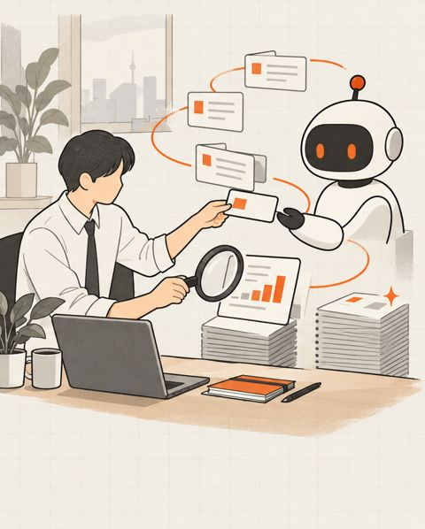
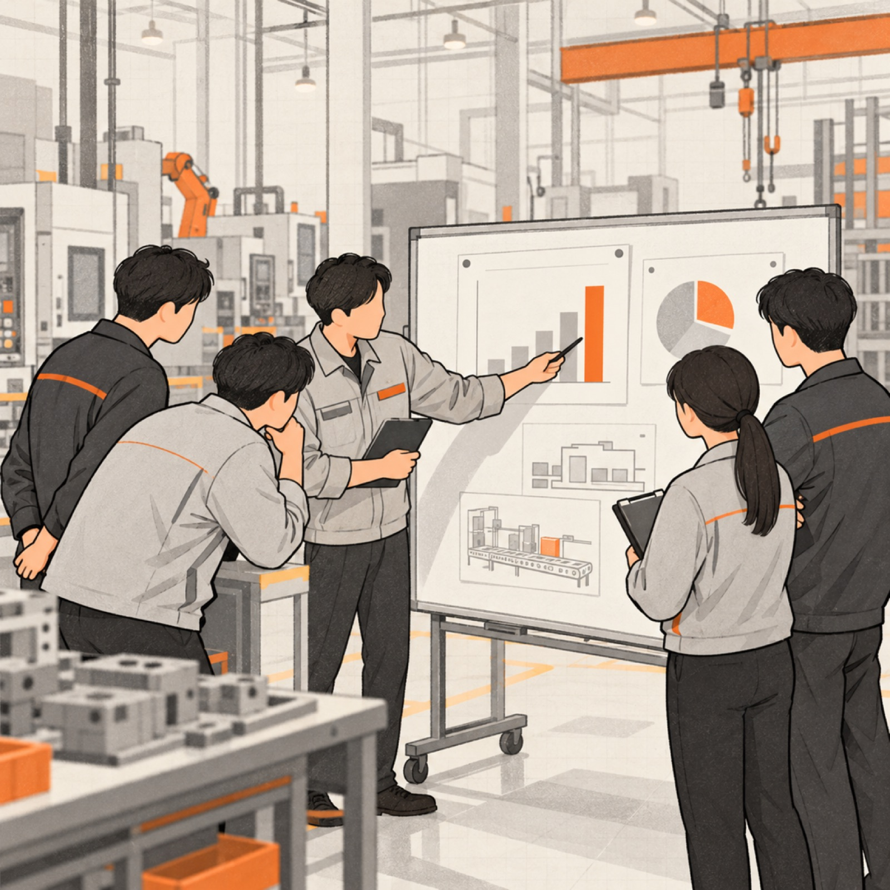

입사 준비용
취업 준비생 · 이직 준비자 · 직무 전환자
- 무엇을 하나
- 지원할 직무(제조·개발·영업·마케팅·광고·미디어·경영지원 등)의 과제로 연습하고, 다시 풀며 나아진 점을 확인합니다.
- 무엇을 받나
- 내 단계와 약한 차원, 연습 기록이 담긴 개인 결과지. 면접에서 AI로 일하는 방식을 설명할 근거가 됩니다.
- 다음 단계
- 약한 차원만 골라 다시 연습 · 교육 과정 안내
일은 이미 바뀌고 있습니다. 직접 하던 일이, AI에게 맡기고 지시하고 결과를 검증하는 일로. 입사를 준비할 때도, 사람을 뽑을 때도, 함께 일하는 팀을 키울 때도 같은 기준으로 봅니다.
지원할 직무의 실제 과제로 연습하고, 면접에서 "AI로 이렇게 일합니다"라고 말할 근거를 만드세요.
지원자에게 링크를 보내 같은 과제를 풀게 하고, 면접관이 볼 과정·결과 요약을 받으세요. 합격 여부는 사람이 정합니다.
팀에 링크를 보내 각자 진단하고, 팀이 막힌 곳과 교육 우선순위를 한 장의 결과지로 받으세요.

올해 하반기, 국내 여러 대기업이 신입 채용과 임원 평가에 "AI로 실무 과제를 푸는 능력"을 넣었습니다. 반도체·조선 같은 제조 대기업이 앞장섰고, 생산·설계 직무까지 적용합니다. 지원자는 무엇을 준비해야 할지, 중견·중소기업은 무엇을 기준으로 뽑고 키워야 할지 아직 막막합니다.

AFTER맡기고 · 지시하고 · 검증하는 일기사로 보기 · 14건
AI 활용능력이란? 기업이 보는 기준 자세히 보기 →
제목은 각 매체 원문 그대로입니다. 개별 기업은 바리온랩스 고객사가 아니며, 트렌드를 정리한 뉴스입니다.
과제와 채점 기준은 같습니다. 누가 쓰느냐에 따라 받는 결과물과 다음 단계만 달라집니다.
취업 준비생 · 이직 준비자 · 직무 전환자
인사·채용 담당자 · 현업 면접관
합격·불합격은 진단이 정하지 않습니다. 지원자에게 AI 활용 평가 사실을 미리 알리고, 사람이 최종 판단하며, 요청 시 결과를 설명할 수 있게 운영하도록 안내합니다.
채용 전형 링크 만들기 →
FOR TEAMS · 재직자교육·HR 담당자 · 팀장 · 경영진
기업들이 채용과 사내 평가에서 실제로 보는 기준, 이 진단이 보는 차원, 직무별 과제 예시와 연습 체크리스트를 한 권에 담았습니다. 신청하시면 진단 링크와 함께 메일로 보내드립니다.
다른 사람과 줄 세우지 않습니다. 내가 어느 단계에 있고, 다음 단계로 가려면 무엇을 연습하면 되는지만 보여드립니다.
값 대신 모양만 보여드립니다. 어디가 비었는지가 중요합니다.
회색 = 스스로 생각한 수준 · 주황 = 과제에서 보인 수준
결과 검증은 스스로 생각한 것보다 아직 약합니다. AI를 자주 쓰는 사람일수록 이 차이가 크게 나타나는 경향이 있습니다.
개인 결과로 끝나지 않습니다. 담당자가 링크를 만들어 팀에 보내면, 응답이 모인 뒤 팀 결과지를 한 장으로 받아 품의에 바로 붙일 수 있습니다.
준비하는 사람도, 뽑는 사람도, 키우는 사람도 같은 과제로 시작합니다.
입력하신 메일로 영업일 1일 안에 진단 링크와 핸드북을 보내드립니다.
+ 핸드북신청하시면 무엇을 묻고 무엇을 연습해야 하는지 정리한 짧은 핸드북을 진단 링크와 함께 보내드립니다.
입력하신 내용이 담긴 메일이 열렸습니다. 보내 주시면 로 영업일 1일 안에 진단 링크와 핸드북을 보내드립니다.
메일 앱이 열리지 않으면 hello@baryon.ai로 이름과 신청 유형을 적어 보내 주세요.